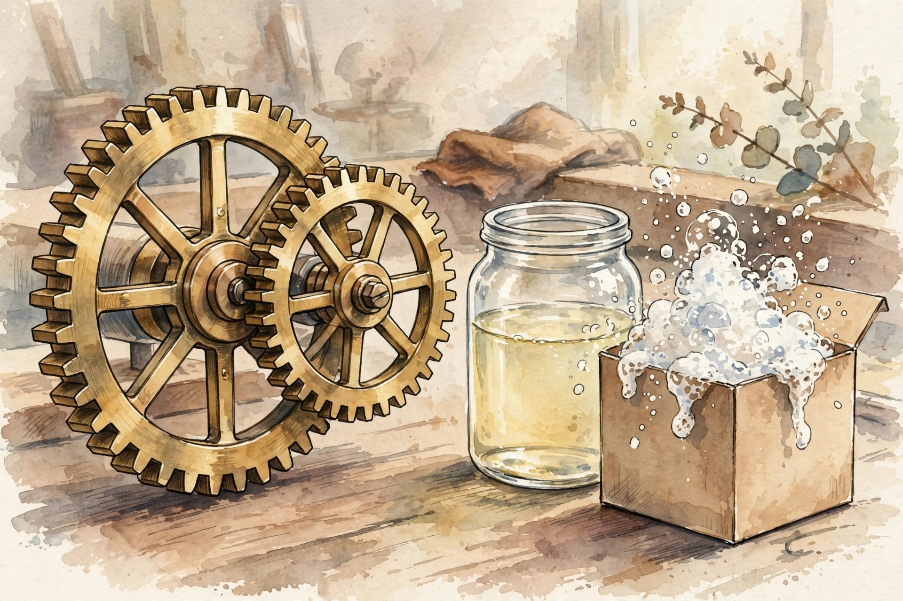

Modern Wisdom · Dating Instruction · Episode 8 · Companion
The Mistake
That Wastes
Years
Matthew Hussey on choosing a partner well: the cliff edge, why we stay, ego traps, chaos versus chemistry, and compatibility over repair. This companion follows the full episode, section by section.
Illustration. The cliff edge: the point after which leaving costs far more than it does today. AI-generated watercolor, made for this page. No text appears in the image.
Reading guide. Each nugget separates SOURCE FACT (what Hussey said) from INTERPRETATION (why it matters, the transferable principle). Charts name their source line.
Watch. The official episode video. Use the chapter menu above to jump to any section of this companion as you listen.
The Wisdom Index: every nugget in this companion
Part 1
The Cliff Edge
Hussey opens with a coaching client who had already listed every reason to leave and still asked him what to do. He could not make her go. Nobody can. But he offers her an image: a cliff edge. On one side, ordinary unhappiness. On the other, free fall, where the damage compounds. Cross it and the cost of leaving multiplies: the blown up finances from waiting too long, the life tangled beyond easy unwinding.
The cruel part is that awareness does not create motion. She knew it was not right. Knowing and leaving are separate systems. That gap is where years go.
Nugget 1 · The cliff
Notice the cliff early
Source fact. Hussey describes a cliff edge past which relationship damage compounds and leaving costs far more.
Interpretation: why it matters. Delay feels free and bills later. The price of leaving rises every month you do not decide.
Interpretation: the principle. Date your exit options while they are cheap. Decide before the fall, not during it.
Part 2
Why We Stay
Hussey names the physics of stuck. The activation energy of leaving is high: heartbreak, untangling a life, telling friends and family, walking through pain. The activation energy of staying is low: do nothing today. Human behavior defaults to the current state, and status quo bias plus sunk cost bias weld the door shut.
Then the quiet fear he voices for his clients: that years inside crashed their stock price, that the market will punish them for time served. All of it converges into paralysis with a motto: yes, I am not happy, but not today. His reframe cuts through it. Forget whether something better exists.
miserable coupling over satisfactory singleness
Matthew Hussey · Episode transcript, why we stay section
Activation energy: leaving vs staying
Hover any bar for detail. Hussey's physics of why awareness does not create motion.
Source: episode transcript, activation energy section. Interpretation: bar lengths illustrate his stated asymmetry. No measured energies exist.
Nugget 2 · The physics
Price the stay
Source fact. Hussey contrasts the high activation energy of leaving with the low energy of staying, plus status quo and sunk cost biases.
Interpretation: why it matters. Staying feels like a non decision, so it never gets audited. It is the most expensive decision in the house.
Interpretation: the principle. Audit the default. Ask what staying costs per year, the way you would price any subscription.
Part 3
Ego and the Perpetual Chase
Then Hussey names the driver nobody admits: ego. With someone who treats you badly, ego asks a terrible question, "am I redeemed". If I can just secure this person, then I will be enough. So people get busy winning someone and never stop to ask whether winning them is advisable. They land the person, and the chase never ends. On paper they have a partner. Inside they never feel they have them. They feel fed scraps and think, but they are mine.
He tells on himself to prove it. Years ago he sat in exactly that relationship, deeply unhappy, telling himself he had never been happier. A dear friend visited, went home, and told her sister he was not good, he was not happy. He had no idea how loudly he broadcast it. The body keeps the score the story denies.
Nugget 3 · Ego
Ego is not a compass
Source fact. Hussey says ego asks am I redeemed and keeps people chasing partners they have already caught but never feel they hold.
Interpretation: why it matters. Ego measures conquest, not contentment. It will spend years winning a prize that punishes the winner.
Interpretation: the principle. Ask the second question first: if I win this person, do I win a life I want.
Part 4
Chaos Is Not Chemistry
The episode's most quoted insight lands here.
people confuse chaos for chemistry
Matthew Hussey · Episode transcript, chemistry section
He adds "intensity for intimacy" to the same indictment. Hussey calls the confusion largely a neurobiological trick. The nervous system reads volatility as aliveness, and the misreading feels like passion.
He takes apart the false choice the internet loves: either stable and healthy but boring, where you settled, or exciting and magical and miserable. The healthy version has its own charge, he argues, but it releases slowly. Like fitness versus nightly pizza and drinking: the high is real in both, but only one compounds. Until the slow release feeling becomes more powerful to you than the spike, you will keep chasing the spike.

Illustration. Gears that mesh versus vinegar and baking soda: fit is quiet, mismatch is loud. AI-generated watercolor, made for this page. No text appears in the image.
Nugget 4 · Compatibility
Chemistry is not compatibility
Source fact. Hussey argues people mistake chaos for chemistry and intensity for intimacy, a neurobiological trick, and that healthy bonds release safety slowly.
Interpretation: why it matters. The most informative data arrives when the spike fades. What remains after calm is the actual relationship.
Interpretation: the principle. Do not marry the spike. Date long enough for the chemistry to tell the truth.
Part 5
Date the Fit, Not the Fix
The closing argument is for compatibility over self improvement theater. So much relationship struggle, Hussey says, is just "vinegar and baking soda": two fine substances that explode together. His rule: it is far easier to date somebody who compensates for your shortcomings than to fix them.
The examples are concrete. You sleep at 9 PM, she clubs three nights a week. Compromise means both of you lose something nightly. Somewhere a person adores the 9 PM homebody life. Let the clubber find her clubber. Same with emotional styles. A man opens up, his partner feels the ick, and the internet calls him weak. Hussey calls it mismatch. She was never the person who could hold him in his wholeness. Let her find the man who never opens up, and go find the one who melts at your honesty and uses it as fuel.
That is the mistake that wastes years: trying to negotiate compatibility into existence with someone whose demeanor simply does not match yours, then joining the online echo chambers of fellow "vinegar and baking soda" survivors instead of admitting the mix was wrong.
Takeaways
- Map the cliff edge early. Leaving gets more expensive every month you wait.
- Audit the default. Staying is a decision with a price, not the absence of one.
- Retire the ego question. "Am I redeemed" never leads to "am I happy".
- Distrust the spike. Chaos reads as chemistry until calm teaches you the difference.
- Date the fit. Find the person whose nature compensates for yours instead of detonating it.